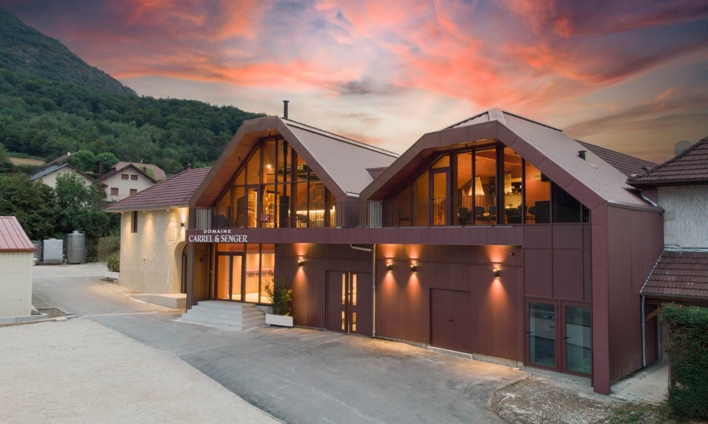
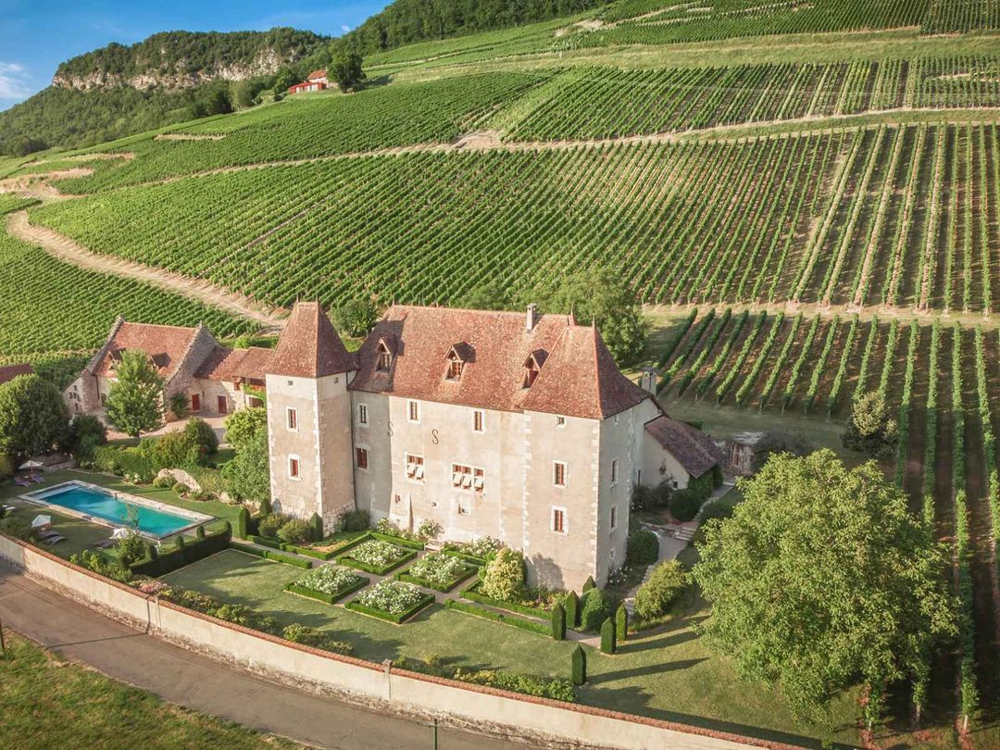
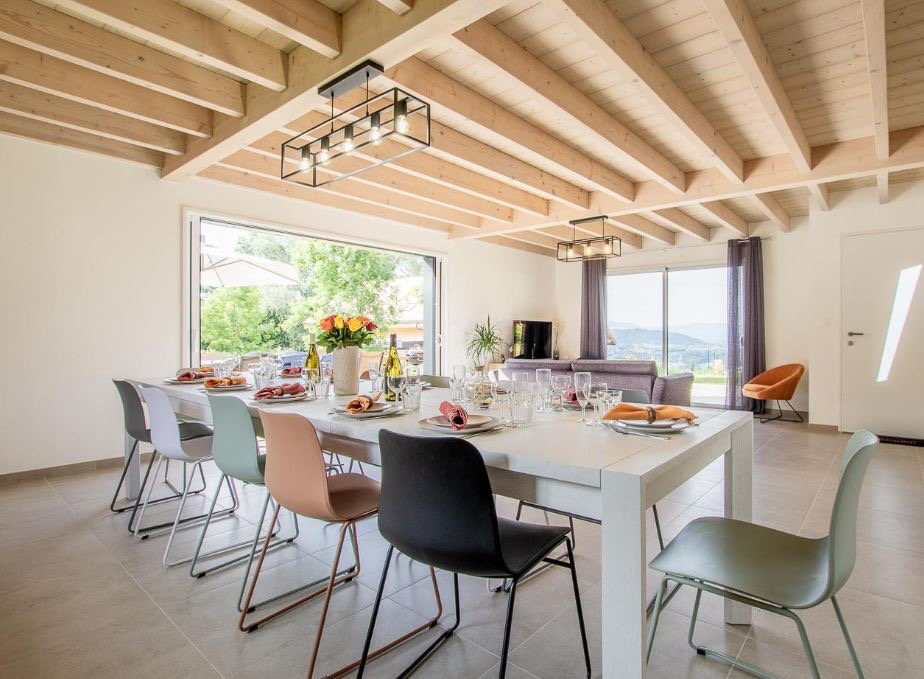

1.42 km · 19 min · ↗ 30 m
working winery since 1830
4 ensuite rooms · AC · terrasse
Four village B&Bs sit 1.4–1.6 km on foot from Les Morainières through the Marestel vines. The chef's own guesthouse is 4.6 km away — with a shuttle.
Nothing is on the doorstep. Les Morainières stands alone at 1400 route de Marestel[1]. For the literal walk: Domaine Carrel & Senger — 1.42 km, 19 min, 4.9/5[17]. For the splurge with a chef tie-in: Château de la Mar, 1.6 km, with Arnoult's own bistro La Table 1625 on site[12]. For one-button bliss: the chef's Maison des Morainières, 4.6 km with shuttle, packaged at €880/two[6].

1.42 km · 19 min · ↗ 30 m
working winery since 1830
4 ensuite rooms · AC · terrasse

1.62 km · 22 min · €220–300
17th-c. château · spa, pool
Arnoult's Table 1625 on site
1.61 km · 22 min · €80–85
3 rooms above the Jacquin cellar
breakfast incl. · Gîtes 4.34/5

1.64 km · 22 min · sleeps 12
148 m² · 4 ensuite bedrooms
€1,100–1,550 mid-week
The chef's own guesthouse in Saint-Pierre-de-Curtille: six plant-named rooms (35–45 m²), pool, garden, €250–€320/night[5]. The only on-foot connection is a 12 km / 3h30 GR65 hike[7] — not a walk to dinner. What you get instead is a complimentary navette door-to-door for every service[4].
Séjour Découverte — €880 / 2 pers · menu + wine + room + breakfast[6]Three stars + a single 19:30–20:00 seating + a 14-cover dining room = book the restaurant before any lodging.[2] Then call:
Special-character lodging within taxi range
Seven character stays within ~25 km — including the chef's own guesthouse with shuttle.
Day-trips & activities within 30 km
Wine cellars, Lac du Bourget cruises, Aix-les-Bains spa, hikes, the petite Venise at Chanaz.
Weekend in Jongieux around a Saturday dinner
The whole weekend planned backwards from the 19:30 seating.